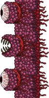

Стену Плоти можно вызвать кинув куклу вуду гида в лаву (в Преисподне), но в таком случае НИП Гид погибнет(если Гида нет то ничего не случится и босс не призовётся) так же можно сбросить самого Гида. Босс имеет 8000 HP. Стена плоти — это тяжелейший босс, после убийства которого, ваш мир перейдет в сложный режим. Также после убийства босса вы получите святой молот, с его помощью вы сможете разбивать Алтари.